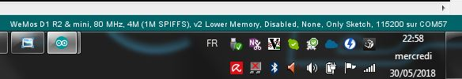

IOT Electrical Power Strip Software development documentation¶
Table of Contents
Contents
Progression¶
Affichage d’un page html static: ok
Affichage page html fichier SPIFFS : ok
Affichage de l’heure à partir d’une page en dur dans le code : ok
Affichage page avec CSS : ok
Gestion des mode wifi SoftAP vs client : ok
reception d’une action via un bouton : ok
lecture du fichier de configuration : ok
intégration MCP23017 : ok
lecture du fichier de configuration config3.json : ok
gestion bouton poussoir mécanique : ok
Ecriture fichier json : ok
Traitement de la requete html avec analyze, exécution et écriture json: ok
manage wif led : ok
integrate nano expander with analog inputs : ok
scan I2C response 57 and 58 nano IoExpander !!!! not a bug simply DS3231 board has 2 component DS3231 an EEPROM ! OK
Time managment strategy : ok
review work without rtc component strategy ok
review work without NTP access strategy ok
define rtc component versus NTP update strategy ok
suppress html replies if main power is off ok
generate a unic server name ok
Error handling improvment 95% (todo dislay low error with LED ? Wich one : power led ?)
configuration page (see softdev.rst)
power measurment
exhaustive test of hebdo mode : 95%
write index special page for softAP Mode with local boostrap or other light js.framework 5%
preparer un infographie résumant fonctionnalité et besoin :
Write user manual : 1%
Write builder manual
Don’t forget the todo list of the doxygen documentation
Namming convention¶
Référence : config4.json
To be added to config json file¶
- To be added 30/30/2019
firstBoot ON/OFF DONE
Power led behavior versus economy mode (include or exclude) ON/OFF powerLedEconomyMode DONE
change/separate wifi Station param and soft app DONE
add wifiSoftApSsid, wifiSoftApPass SSid are in credentials DONE
for C code, if wifiSoftApSsid or wifiSoftApPass are empty : creatIt (see @firstBoot)
startInApMode : ON/OFF DONE
remove wifimode DONE
change IP in softAP_IP and Port in softAP_port DONE
change name of the file to config4.json DONE
- To be added 09/05/2019
IP add in soft AP mode to display it (what the utility ? to configure it) DONE
mac add to display it DONE
add ip in mode Station : to configure it if we are not in DHCP mode DONE
DHCP_mode : On or OFF DONE
gateway add DONE
- To be added 9/7/2019:
time zone
First boot configuration¶
- @first boot :
mode AP connection and display config page to set SSID password and server name
softAP ssid <32
WARNING pass in AP mode >8 <63
propose a unic ID for server name to the user
explain that it will possible to change after
What are hypothesys, when boot for the first time ?¶
Is a config json exist ? What is inside it ? Yes and it containt FirstBoot ON and other stuff.
Same questions with credentials ? No, we generate it
We considere that the user upload sketch and data directory.
- When consider the first boot is OFF ? When we receive the folowing form
station mode or AP choice
SSID et pass du mode AP (WARNING provide diff SSID if you own more then one PowerStrip)
SSID and pass of station mode [ optionel if user wish stay always in AP mode ]
propose default same hostname and default SSID AP build with mac add: IOT_EPS_HHHH
First boot process¶
check firstBoot param in config.json if ON
start in AP mode with page firstboot.html (in the code, not a real file) only if main power is on
server.on( /firstBoot, firstBootHandler)
in firstBootHandler check param, write credential, set firBoot param to « trySation » if needed
restart ESP
if Station is ok firstBoot is ended, set firstBoot param = off
if station ko reload firstboot page with alerte
Behavior when user move EPS from one physical site to another¶
It is not a first boot
EPS will search its WiFi station and will not find it so it restart in AP mode then user can acces to the config special page change SSID and password.
Configuration parameter¶
add IP of AP mode
EPS name (host name)
Plugs names
Station SSID
Sation mode passwd
Soft AP SSID and password
- All json general section parameter without:
numberOfPlugs
rtcValidity
set time in AP mode and perhaps for station mode summer and winter time.
As for plugonof, we decide to build one configuration page for station mode and one configuration page for AP mode because in station mode we can use CDN( bootstrap and jquery) functionnality but not in AP mode because the embeded version of this content delivery network (CDN) 14 are too big >3Mo.
Action name : cfgsend (all in lowercase) Action name to get json value updated page : cfgpage
Set time and date parameter names¶
setTime, setDate
Plugs modes description¶
Manuel¶
appui sur BP ON/OFF
durée avant arrêt (durée limité à 300mn): pour s’offrir la possibilité de couper la prise en cas de départ prématurer…
ou heure d’arrêt : dans le même état d’esprit mais pour fixer une heure absolue.
Timer / minuteur / mode cuit oeuf¶
1 seul paramètre la durée ON à partir de maintenant (durée limité à 300mn00s)
1 appui court lance ou relance la minuterie
1 appui sur BP (long) met OFF et repasse en manuelle
la minuterie peut être avec des secondes exmple 2mn30s (2:30 dans la requête)
La minuterie est-elle uniquement lancée par BP ? Sinon comment on fait la diff If state == On immediat start
Périodique/cyclique¶
duré on
durée off
avec reprise de On après off indéfiniment jusqu’au repassage en commande manuelle.
avec champ heure de début (et “Entrez une heure de début (facultatif)” par défaut)
un appui court sur BP met à OFF mais reste en mode cyclique pour le cycle suivant
un deuxième appui court reprend le cycle (attention ne met pas forcément à ON)
le mode pause de l’interface web effectue les mêmes actions que ci-dessus
1 appui sur BP (long) met OFF et repasse en manuelle
Hebdomadaire¶
heure de mise on
heure de mise off
choix des jours de la semaine
un appui court sur BP met à OFF mais reste en mode Hebdomadaire pour le cycle suivant
un deuxième appui court reprend le cycle (attention ne met pas forcément à ON)
le mode pause de l’interface web effectue les mêmes actions que ci-dessus
1 appui sur BP (long) met OFF et repasse en manuelle
Clone¶
Clone le fonctionnement d’une des 3 autres prises. Il s’agit d’une copie des paramètres. Ce n’est pas un clone dynamique. Ce qui signifie que l’information de la prise source et de son état au moment du clonage ne sont pas historisés.
Evolutions possibles¶
un mixte entre cyclique et hebo: clyclique mais seulement pendant un certaines période de la journée.
Sur le mode hebdo, prévoir la possibilité d’avoir plusieurs plage de fonctionnement par jours et différentes chaque jour
connexion MQTT, IFTTT, Flic, openHAB
Factorisation des varibales de mode¶
redPlug
State = ON
Mode = Manuel | Minuterie | Cyclique | Hebdomadaire | Clone
hDebut =
hFin =
dureeOn = 60 en minutes
dureeOff = en minutes
Jours[] s = OFF,OFF,OFF,OFF,OFF,OFF,OFF
clonedPlug =
onOffCount = 10
Start up behavior¶
Question:what should be the behavior when power is switched to ON ?
2 cases are possibles when power is On: the button is switched to ON or the system restart after a genaral power cut
Soit l’interrupteur général est actif (cas de la coupure EDF) et on reprend où on en était.
Soit l’interrupteur général est inactif et on reprend en mode manuel.
L’interrupteur général coupe le 220V des prise mais pas de l’ESP8266.
Bien expliquer les 2 modes de fonctionnement dans l’interface WEB et donner le choix à l’utilisateur.
Expliquer le coup de la coupure de courant.
Evol : après coupure EDF : donner le choix à l’utilisateur de configurer le comportement de chaque prise.
Possible behaviors:
on repart d’où on en était (avec éventuellement alerte instantanée à l’utilisateur)
on met tout la prise à OFF en manuel(avec éventuellement alerte instantanée à l’utilisateur)
on informe l’utilisateur (canal à définir, MQTT ou autre…) qui décide mais on met en pause en attendant
When main power switch is off : html server post no reply.
Problem : when in AP mode WiFi start even if main power is OFF and in Station ESP connect to acces point. It is not a logicaly expected behavior. When power switch is in OFF position no Wifi activity should be detected.
Solution wait for power on in ARDUINO setup function. Restart ESP in ARDUINO loop when power is switch to OFF.
Special push button behaviors @stratup¶
PB0 : @power on (not by power switch but by wall plug) start in simple manual mode see WIFI Modes
PB1 : in same conditions as above, start specials action only for expert and debug mode (today creat default json) with main power switch on on state (to be cecked 21/10/2019)
Configuration ARDUINO¶
WEMOS D1 MIN ARDUINO configurattion:
WIFI Modes¶
In Json config file, it is configured with: « startInAPMode » value,
No WiFi¶
Also called simpleManualMode
When power on (by the wall plug not by the power switch) the powerStrip, maintain Push button plug 1
Power strip start in this mode independently of Json configured mode.
4 Big color LED flasf 20 times in purple.
In this very simple poor mode, powerstrip works only in manual mode with BP actions ON/OFF.
SoftAP¶
EPS starts in this mode when value of « startInAPMode » parameter is « ON ».
No acces to NTP server but all other functions work.
After 20 false tries of station mode, power Strip automaticly switch in this mode
Station¶
EPS starts in this mode when value of « startInAPMode » parameter is « OFF ».
The best functionnal mode ! With full web interface and others functions.
both mode STA and AP¶
July 2019 : reflexion when we start in DHCP station mode whe don’t know IP address of the IoT EPS. One way to know it is to use a tool to scan the local network ! So why do not connect systematically in both mode !!! Do it in new dev branch !!!!!!!!!!!!!!!!!! 10 months of development to arrive at this point !!!!
IP address¶
AP and non DHCP IP address are class C address (subnet mask is 255.255.255.0 hardcoded )
WIFI LED behavior¶
In Station mode, fast flashing (20 times 100ms, 100ms) before to try connection and after slow flashing while waiting for connection. (500ms with a 20 times time out - new in 24/12/2018). If no connection detected afte 20 tries Automaticaly switch in SoftAP mode.
In Access Point LED FLash quickly (20 times 100ms-500ms) and led flash slowly (50ms-2s) while waiting for connection.
Cause WiFi.softAPConfig function is a blocking function. This is wrong : test on 24/12/2018 softAP is non blocking !
So - in summary - if power led is on and WIFI Led flash (50ms-2s) WIFI wait for connection in AP mode.
It rises a new problem : in this state it is not possible to use plugs even in simple manual mode with push button.
Possible solution : check push button at startup if a particular combination is pressed, plugs do not try to connect to wifi and mork in simple manual mode. In Dec 2018, push button added pressing plug 0 while power on the strip cause no WIFI mode (color LED FLASH in RED to confirm) This is : simpleManualMode (see above). To return to normal mode power off the strip (not by the power on/off button but by removing the strip from the wall plug)
ESP8266 and its wifi managment !¶
ESP8266 store credentials information in FLASH but how to acces to them ??? And how to contol them
Question how to erase wifi flash param ?
Memory mapping is not provided. Somem peace of informations like in SPIFFS des cription that provide the order of memory big blocks but not their respective add
Second question : how to directly acces to flash memory ? Perthaps with SPI lib https://github.com/esp8266/Arduino/blob/master/doc/libraries.rst#spi Reponse : ESP.flashRead(…)https://github.com/esp8266/Arduino/blob/master/cores/esp8266/Esp.h ESP.flashWrite(..) ESP.flashEraseSector(…) ESP.eraseConfig() Efface tout à partir du haut de la flash jusqu’en -0x4000 soit 16k Fonction non documentée !
ESP-SDK ? Rien vu qui permet erase
persistant(false) <=> n’écrit pas en flash mais n’efface pas les info
Question 3: How to read flash info ? Reponse : call Espressif SDK functions: #include <user_interface.h> in ArduinoCroquishardwareesp8266comesp8266toolssdkinclude page 62/179 pdf ESP8266 Non-OS SDK API Reference 3.5.33. wifi_softap_get_config_default
struct softap_config {
uint8 ssid[32];
uint8 password[64];
uint8 ssid_len; // Note: Recommend to set it according to your ssid
uint8 channel; // Note: support 1 ~ 13
AUTH_MODE authmode; // Note: Don't support AUTH_WEP in softAP mode.
uint8 ssid_hidden; // Note: default 0
uint8 max_connection; // Note: default 4, max 4
uint16 beacon_interval; // Note: support 100 ~ 60000 ms, default 100
};
ESP12E module Flash size : W25Q32 32Mbits/4Mo 256octets /pages 16384 pages Peuvent être effacé ar groupe de 16 ou 128 ou 256 Soit 4(secteurs) ou 32kB ou 64kB
Displaying plugs mode only with LED¶
Problem : how to displays functionnal mode of a plug without the web interface
Problem2 : is it really necessary ?
- Solution1: Use the little plug red LED. When OFF flash 1 shortly one time for mode 1 manual to five
time for mode 5 Clone. When ON invert ton and toff of the flasher
Solution2: use color LED with flash capability one time for mode manual to 5 times to mode Clone with a long periode between group of flash 3 seconds for example.
Implemented solution : n°1 with the little specialPB pushed in the same time as the plug Push Button
Advice : retain special BP some seconds before pushing plug’s PB to avoid to swith the plug.
WEB page development¶
HTML5 et css and bootstrap jquery, jquery ui, ajax and popper
bootstrap from its CDN https://www.bootstrapcdn.com/
html requests¶
ipaddr/config?plug=redPlug
/PlugConfig?plug=red&mode=manuel /modeManuel?plug=redPlug
Utilisation de formulaires
Possible requests:
Mode=Manuel&State=ON&dureeOff=299 : dureeOff on minutes only
Mode=Manuel&State=ON&dureeOff=299:59 : dureeOff on minutes and seconds
Mode=Manuel&State=ON&hFin=23:59 : hFin only one format HH:MM
Mode=Manuel&State=OFF
Mode=Manuel&State=ON
NTP server name¶
The name reside in the IoT_EPS.h file and is not a config param through web config page
Serveur html ESP8266¶
Repris de l’exemple fourni avec l’IDE ARDUINO : ESP8266WebServer/FSBrowser
Cette exemple apporte un lot de fonction qui gérent l’envoie de fichier css, jpg et autres…
edit page¶
Comportement etrange de l’extnsion html
Le bouton parcourir tronc en htm et le visualisateur ne montre que les fichier htm
Edit.htm source code ? not provided in the .ino file
One possible source (but not really the same) : https://github.com/gmag11/FSBrowser/blob/master/data/edit.html
IOExpander¶
The following text is for history only and it is obsolète:
When we define hardware pin usage, we decide to use IOEpander MPC23017. Due to this choice=, we need to use a new lib Adafruit_MCP23017.h
Available method:
void begin(uint8_t addr);
void begin(void);
void pinMode(uint8_t p, uint8_t d); // 0<= p < 16
void digitalWrite(uint8_t p, uint8_t d);
void pullUp(uint8_t p, uint8_t d);
uint8_t digitalRead(uint8_t p);
void writeGPIOAB(uint16_t); /: A priori on peut écrire sur un port en entrée sans risque
uint16_t readGPIOAB();
uint8_t readGPIO(uint8_t b); // b=0 => PORTA, else PORTB
void setupInterrupts(uint8_t mirroring, uint8_t open, uint8_t polarity);
void setupInterruptPin(uint8_t p, uint8_t mode);
uint8_t getLastInterruptPin();
uint8_t getLastInterruptPinValue();
Adresse par défaut: 0x20 (avec les 3 broches d’adresse à 0)
En premier mouture, essai avec la librairie directement mais en deuxième monte, faire une classe qui prennent en charge la gestion du temps (classe Flasher dédiée au MCP)
Deuxième mouture clréation de la class CPowerPlug avec utilisation de variable static
_initDone et _mpc (mpc étant la ressource commune à toutes les instances de la classe)
Important
J’ai choisi d’utiliser une broche dédiée pour la LED d’état des plugs. On aurait pu utiliser la broche de commande du relais mais au cas où les 2 seraient inversées l’une par rapport à l’autre, cela apporte plus de liberté.
During development, to get more digital IO and 4 analog input, we decide to add a ARDUINO Nano as an I2C IO expander (see Hardware dev doc)
Error handling¶
See dedicated Excel file. All below informations are obsoletes.
Buildin test error BIT
PBIT : preliminary BIT
File system
Config param (JSON config file)
Credentials file (not in firstboot mode) - check its structure
I2C acces
rtc
only in Station mode and after WIFI connection, check NTP access
- CBITContinus BIT every loop cycle, check :
I2C acces (only one retry)
RTC access
JSON config file
File system
NTP access
…
current monitoring for ON plugs and if it is possible with the choosen sensor when currents will be very low
- Not in CBIT
WIFI state if in Station mode and/or AP mode ???
Because when wifi is down (wifi box shut down for exemple EPS could continue to work)
- Can we work without File system or Json error ? No, fatal error => RED LED FLash
The system won’t be started so no special web page index
Can we work without credential file ? Yes start in AP mode : OK
Check credentials.json structure
Can we work without I2C and/or nanoI2CIOExpander ? No, fatal error : OK
Can we work without RTC ? No, in the first release of IoT_EPS we consider that when one component is ko the entire EPS is ko (no degraded mode).
Perhaps in future version of the EPS, we can imagine that we work without DS3231 and only with NTP server and the ARDUINO Time.h. This version of the EPS could only work in Station mode.
- Can we work without internet connection or Wifi in station mode ?
yes in softAP mode Refine softAP mode behavior
Can we work without NTP server ? Yes (it could be temporary down)
Important
How to display no fatal error ? the only one is NTP error all other error are FATAL We decide to only display on index html page
Time managment strategy¶
Normal
No NTP server (no Wifi)
First of all, what is the time usage in the EPS ? bool CPowerPlug::isItTimeToSwitch() => CRtc::now().unixtime() <=> DS3231::now().unixtime()
if NTP is reachable ie in Station mode and all is ok update DS3231 time every 15mn. else do not update ds3231 and work with its time !
if NTP not reachable or in AP Mode the time can be updated by configuration page.
NTP server configuration ? not configurable for now only in IoT_EPS.hDebut
RTC on error strategy, No RTC component
RTC DS3231 EEPROM access¶
nano ADD is 58
I2C add of EEPROM AT24C32 is 57 Changed to 0x53
Ok but why access to this EEPROM ? Perhaps to store a copy of config3.json
Live time ? 10^6 write cycle
8 bytes/page 4ko
Livetime of ESP8266 flash SPIFFS¶
hypothesis : - 4 plugs that work in clycle mode 1 minutes on and 1 minutes off - 4 plugs not synchronyzed With this hyp. the 4write/minutes
WEMOS D1 Flash is Ai ESP12-F module W25Q32 pour 32Mbits soit 4Mo 100k erase/write cycle
25k minutes = 416 hours = 17 days
But it is a very hard hypothesis
A great question : what is the realistic usage ?
one On/off cycle by hour on each plug every days only 12 hours by days 25k hours /12 <=> 2083 days <=> more than 5 years
Livetime of the relays¶
10^7 time
HTML IHM integration¶
Start on March 2019
Used technologies:
HTML5/css
Javascipt
JQuery
Boostrap
Test list:
For all plugs
manual ON/OFF : OK on RED
manual ON with OFF time : ok on RED
manual ON with delay : ok on RED 1 minutes
timer : RED plug ko, state no transmit: corrected ok
timer red switched by bp : OK
clone from green cyclic to bleu : ok
… see testAndErrorHandling.xlsx file for the rest of the tests
bug finded : - manual hfin and dureeOff without parameter should be KO - manual cleanup buton dont remove hfin and others param - no default state in manual mode : corrected - minuterie (timer mode) no default value for the ratio immediat start or differed start - corrected - bug in ESP source side effect of main power switch ?
improvments: - add tips on main page : To refresh this page press F5
Usefull Documentation¶
Html server¶
Exemples ESP html serveurs:
C:MountWDDonneesOneDriveDonnees008_iao_wrkArduinoCroquisESP01HelloServer
Documentation arduino-esp8266 3
Gros gros tuto sur Web serveur 4
Demonstrate using an http server and an HTML form to control an LED 5. The http server runs on the ESP8266.
jQery slim : 70ko
json (lectures / écritures)¶
La librairie utilisée: ArduinoJson 7 version 5.13.2
Assistant plutôt efficace: ArduinoJson Assistant 8
Json genrator sur ObjGen.com 9
Used library¶
last update : 02/12/2018
10 libs:
Utilisation de la bibliothèque ESP8266WiFi version 1.0
Utilisation de la bibliothèque ESP8266WebServer version 1.0
Utilisation de la bibliothèque ArduinoJson version 5.13.2
Utilisation de la bibliothèque Wire version 1.0
Utilisation de la bibliothèque RTClib version 1.2.0
Utilisation de la bibliothèque ESP8266mDNS prise
Utilisation de la bibliothèque Adafruit_MCP23017_Arduino_Library version 1.0.3
Utilisation de la bibliothèque FastLED version 3.2.1
Utilisation de la bibliothèque nanoI2CIOExpLib version 3.1
Utilisation de la bibliothèque NTPClient version 3.1.0
9 libs are official Arduino libs and one lib is spéciale:
Eccueils et autres difficultés¶
Limite des longueurs de nom de fichier SPIFFS¶
Les noms de fichiers dans SPIFFS sont limités par défaut à 32 caractères chemin compris.
C’est court! voir github issue #34 mkspiffs 11
Prise en main de la librairie JSON¶
Nécessite un investissement personnel important.
DS3231 stuck I2C bus¶
It is a known problem with DS3231 see method for recovering I2C bus #1025 12
Vocabulary¶
Un réseau de diffusion de contenu (RDC) ou en anglais content delivery network (CDN) 14
Webography¶
- 1
https://play.google.com/store/apps/details?id=com.network.networkip&hl=fr
- 2
- 3
https://arduino-esp8266.readthedocs.io/en/latest/esp8266wifi/readme.html#class-description
- 4
- 5
- 6
- 7
- 8
- 9
- 10
https://www.hackster.io/MajorLeeDuVoLAB/nano-i2c-io-expander-3e76fc
- 11
- 12
- 13
http://www.forward.com.au/pfod/ArduinoProgramming/I2C_ClearBus/index.html
- 14(1,2)